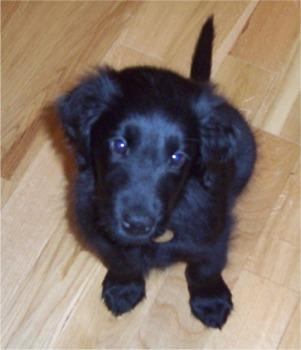

1."ความน่ารัก" ที่ถูกคัดเลือกโดยธรรมชาติ สุนัขมีวิวัฒนาการของกล้ามเนื้อรอบดวงตาที่ซับซ้อนกว่าหมาป่า ทำให้สามารถทำ "สายตาลูกหมาแป๋ว ๆ" (puppy dog eyes) ที่มนุษย์เราต้านทานไม่ได้ งานวิจัยของ Juliane Kaminski พบว่าสุนัขที่ถูกเลี้ยงเร็วที่สุดในศูนย์พักพิงคือสุนัขที่ "เลิกคิ้วด้านในขึ้น" ได้ดีที่สุด เพราะทำให้ตาโตและดูคล้ายเด็กทารก มนุษย์เรามีสัญชาตญาณอยากดูแลสิ่งที่มีลักษณะแบบ "เด็ก" (baby schema) ได้แก่ ตาโต หน้าผากกว้าง หัวใหญ่ ซึ่งเป็นกลไกวิวัฒนาการเพื่อให้เราดูแลทารกของเผ่าพันธุ์ตัวเอง
2.สุนัขช่วยบำบัดจิตใจ สุนัขถูกใช้ในกิจกรรมบำบัด (pet therapypet therapy) เพื่อช่วยผู้ป่วยโรคซึมเศร้า โรคเครียดหลังเหตุการณ์สะเทือนขวัญ (PTSD) และผู้สูงอายุที่อยู่ตามลำพัง การมีสุนัขเป็นเพื่อนช่วยลดความดันโลหิต ลดความเครียด และเพิ่มระดับเซโรโทนิน ซึ่งเป็นสารแห่งความสุขในสมองสุนัขช่วยบำบัดจิตใจ สุนัขถูกใช้ในกิจกรรมบำบัด (pet therapy) เพื่อช่วยผู้ป่วยโรคซึมเศร้า โรคเครียดหลังเหตุการณ์สะเทือนขวัญ (PTSD) และผู้สูงอายุที่อยู่ตามลำพัง การมีสุนัขเป็นเพื่อนช่วยลดความดันโลหิต ลดความเครียด และเพิ่มระดับเซโรโทนิน ซึ่งเป็นสารแห่งความสุขในสมอง